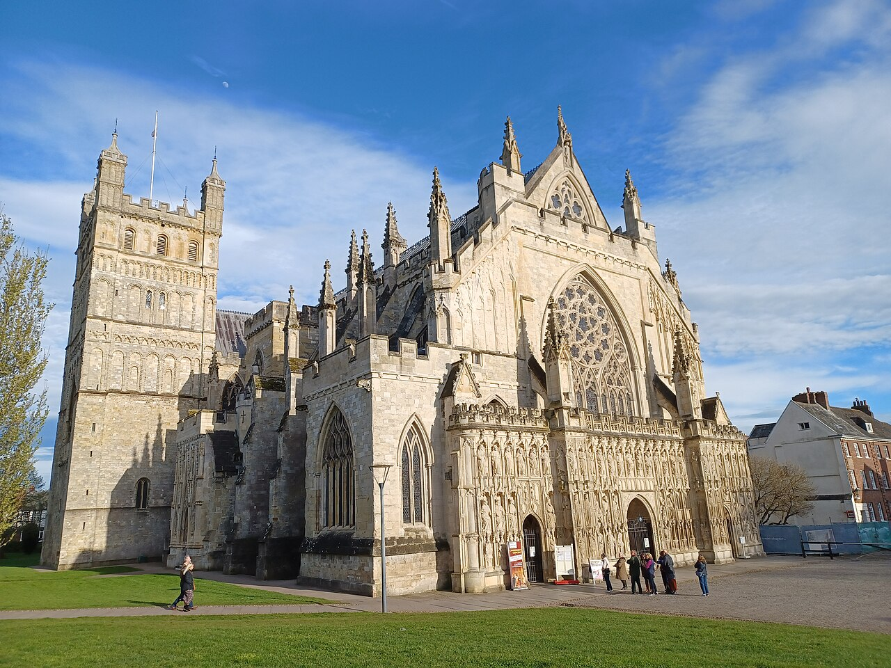

WORKSHOP PROPOSAL01 March2027
The 11th IEEE International Conference
Connecting intelligence.
Transforming everything.
Smart Internet of Things · Cyber-Physical Systems · Intelligent Futures
HOST CITYEXETER
Explore
SMARTIOT 2027
Welcome to SmartIoT
A global forum for the ideas, systems and people shaping a smarter connected world.
00Days
:
00Hours
:
00Minutes
:
00Seconds
COUNTDOWN TO EXETER
11TH EDITION
SmartIoT
2027
PROGRAM COMMITTEEGlobal research experts
ORGANIZING TEAMResearchers & practitioners
ABOUT THE CONFERENCE
Where the physical and digital worlds converge.
Internet of Things plays an important role in current and future information, network and communication systems. Smart IoT is an exciting research field with the potential to transform both fundamental computer science and our standard of living.
IEEE SmartIoT 2027 brings researchers and practitioners together to exchange the latest research, theories and applications for Smart Internet of Things and Cyber-Physical Systems.
Meet the committee →MARK YOUR CALENDAR
Important dates
All deadlines are based on the conference website. The submission deadline is fixed.
SUBMISSION DUE15 April2027
AUTHOR NOTIFICATION15 June2027
FINAL PAPER & REGISTRATION15 July2027
CONFERENCE23–25 August2027 · Exeter
CALL FOR PAPERS
Research that makes everything smart.
Prospective authors are invited to submit original work proposing new methodologies, research directions and solutions to existing challenges.
View full call for papers ↗IoT sensing, monitoring, networking & routing
Big data analysis & cloud computing
Edge computing & fog computing
Smart cities, transportation & vehicles
AI, machine learning & evolutionary computing
Social networks, multimedia & mobile computing
Blockchain & emerging technologies
Industry 4.0 & Industrial IoT
Control & decision making for Smart IoT / CPS
Security & privacy for Smart IoT / CPS
STAY UPDATED
Latest news
HOST CITY
Meet us in
Exeter.
A beautiful and historic city in southwest England, Exeter is a gateway to Devon’s countryside, coastline and Dartmoor National Park.
Explore the venue →
50.7184° NEXETER3.5339° W
OUR JOURNEY
Conference history
BE PART OF SMARTIOT 2027